1
第一天
2026年5月8日（五）
台北 → 仙台空港 → 仙台一番街
🌅 早餐自理 | ☀️ 中餐：機上簡餐 | 🌙 晚餐自理
🏨 ドーミーイン仙台シーサイド
🏨 ドーミーイン仙台シーサイド
📍 第1天移動路線
桃園國際機場 出發
集合辦理出境，搭乘星宇航空直飛仙台
清晨集合於桃園中正機場第一航廈，辦理出境手續後搭乘 星宇航空 JX862 直飛仙台空港，預計飛行時間約3小時。
1/2
2/2
飛機上
仙台直飛，機上簡餐
搭乘星宇航空 JX862 從台灣桃園直飛仙台空港，機上享用簡餐，欣賞雲層之上的藍天景致。
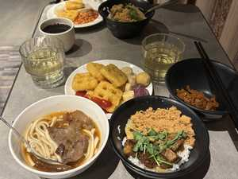
1/5
2/5
3/5
4/5
5/5
仙台空港抵達 → 車上風景
搭乘遊覽車前往飯店，沿途初探仙台風貌
順利降落仙台空港（16:00），通關取行李後搭乘遊覽車前往飯店。沿途窗外是初夏的東北田野與城市景色，令人興奮地感受到旅途正式開始。
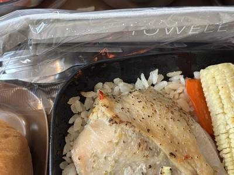
1/6
2/6
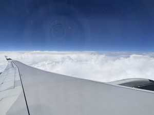
3/6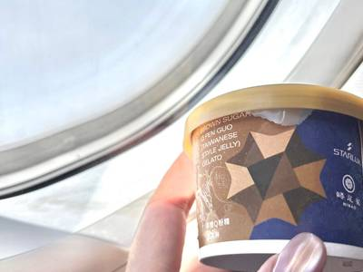
4/6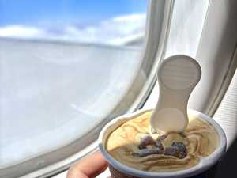
5/6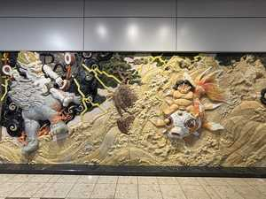
6/6ドーミーイン仙台シーサイド
TEL: 022-388-5489
入住第一晚的飯店 ドーミーイン仙台シーサイド，位於仙台近海地區。ドーミーイン是日本人氣商務飯店連鎖，以高品質大浴場、豐盛早餐聞名，每間客房乾淨舒適，是旅途中的溫馨歸宿。
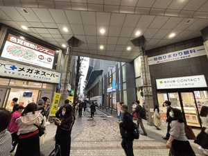
1/5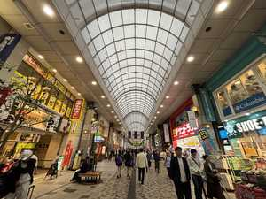
2/5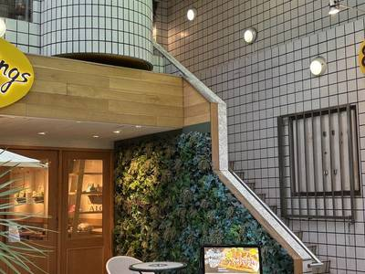
3/5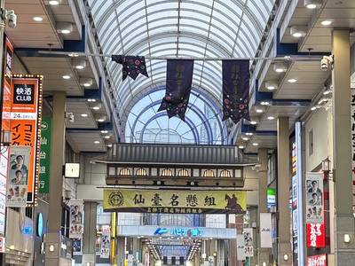
4/5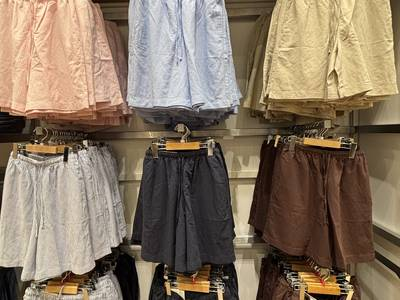
5/5仙台一番街 — 夜間自由活動
以仙台車站為中心的購物精華區
仙台一番街是以仙台車站為中心展開的熱鬧商店街，百貨商城、時尚店鋪、餐廳咖啡廳林立。東北地區最具規模的繁華商業街，傍晚起燈火輝煌，感受東北夜生活的熱情活力。
📌 本日亮點：原訂第二天的一番街行程調整至第一天晚間，大夥兒抵達仙台後立即體驗東北最熱鬧的夜晚！
📌 本日亮點：原訂第二天的一番街行程調整至第一天晚間，大夥兒抵達仙台後立即體驗東北最熱鬧的夜晚！
1/9
2/9
3/9
4/9
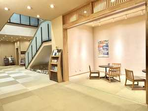
5/9
6/9
7/9
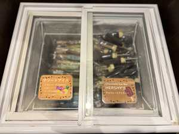
8/9
9/9
2
第二天
2026年5月9日（六）
銀山溫泉古街 · 足湯 · 金蛇水神社
🌅 早餐：飯店內用 | ☀️ 中餐：山形牛風味餐 | 🌙 晚餐自理
🏨 ドーミーイン仙台シーサイド（連住）
🏨 ドーミーイン仙台シーサイド（連住）
📍 第2天移動路線
飯店早餐 — ドーミーイン
仙台シーサイド飯店內用早餐
ドーミーイン招牌豐盛早餐，有多種日式與西式選擇，備好體力迎接精彩的第二天！
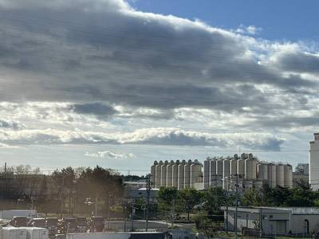
1/5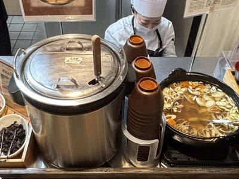
2/5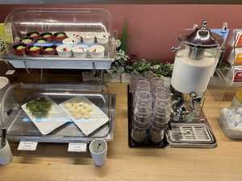
3/5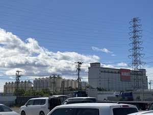
4/5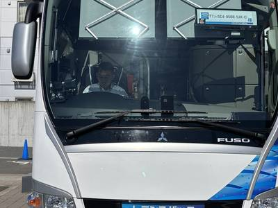
5/5銀山溫泉古街散策 + 足湯
山形縣尾花澤市 — 大正浪漫の世界
銀山溫泉是與宮城縣鄰接的山形縣尾花澤市一處溫泉鄉，沿著銀山川溪谷而建，兩旁排列著3至4層樓的大正浪漫木造旅館，氛圍宛如世外桃源。500多年前此地發現銀礦因而得名，白銀瀑布（落差22公尺）、洗心峽、延澤銀礦坑皆在步行範圍內。
🌟 此地也是電視劇「阿信」的取景故鄉，日本NHK晨間劇的經典背景。
💧 溪邊設有足湯，可免費泡腳，享受純正東北溫泉！
🌟 此地也是電視劇「阿信」的取景故鄉，日本NHK晨間劇的經典背景。
💧 溪邊設有足湯，可免費泡腳，享受純正東北溫泉！
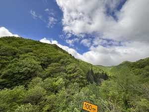
1/20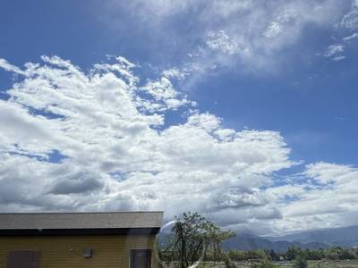
2/20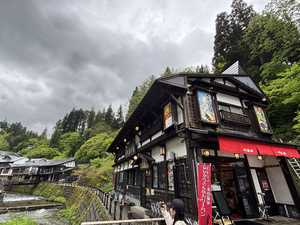
3/20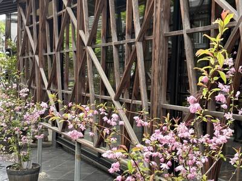
4/20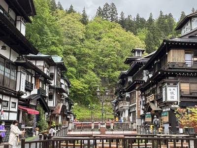
5/20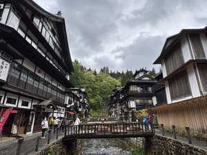
6/20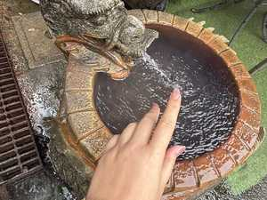
7/20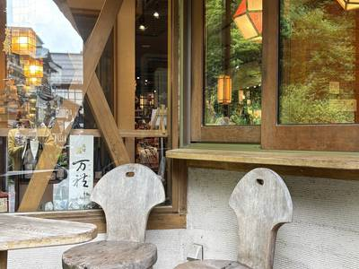
8/20
9/20
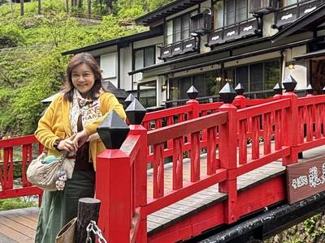
10/20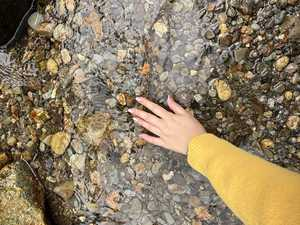
11/20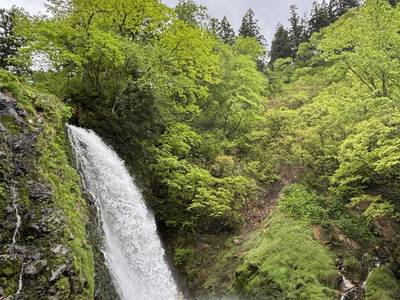
12/20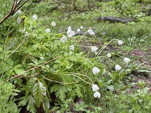
13/20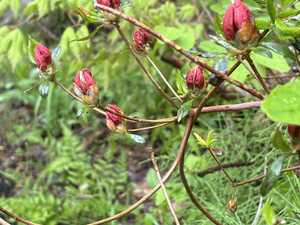
14/20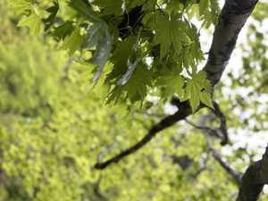
15/20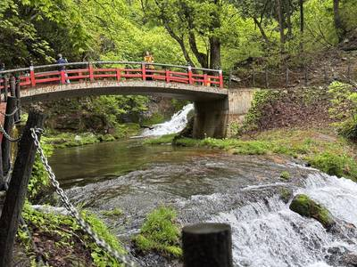
16/20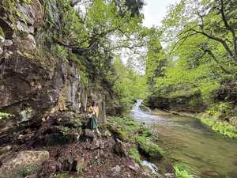
17/20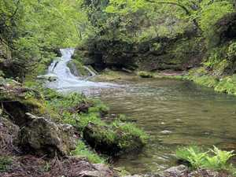
18/20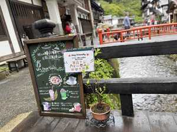
19/20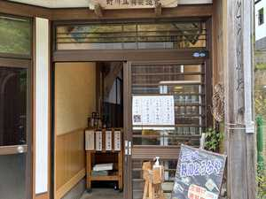
20/20山形牛風味中餐
品嚐山形縣名產和牛料理
山形牛是日本三大和牛產地之一，肉質細嫩、油脂分佈均勻，帶有獨特的甘甜風味。中餐以山形牛為主角，搭配當地新鮮食材，是本次行程的美食亮點。
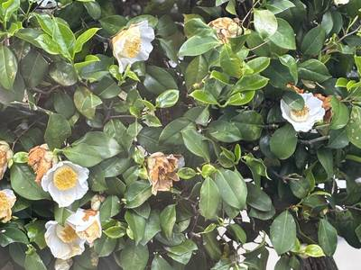
1/6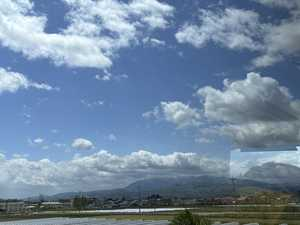
2/6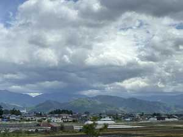
3/6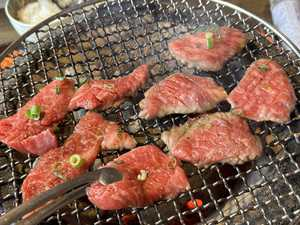
4/6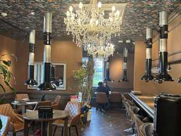
5/6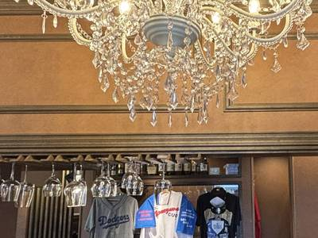
6/6金蛇水神社 — 財運NO.1
東北最強能量景點，5月紫藤盛開
金蛇水神社供奉「蛇」與「水」之神，自古庇佑生意興隆、財運旺旺，被日本電視雜誌評為「東北最強能量景點」。神社內金蛇弁財天具提升財力、智慧與技藝的神德。
🌟 社殿四周擺滿稀有「蛇紋石」，用手撫摸後再摸錢包即可增加財運！
💜 5月正值樹齡約300年的九龍藤最佳賞花時期，紫藤花串垂掛，浪漫迷人。
🌟 社殿四周擺滿稀有「蛇紋石」，用手撫摸後再摸錢包即可增加財運！
💜 5月正值樹齡約300年的九龍藤最佳賞花時期，紫藤花串垂掛，浪漫迷人。
1/20
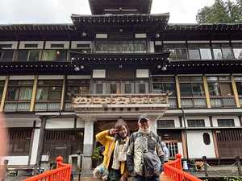
2/20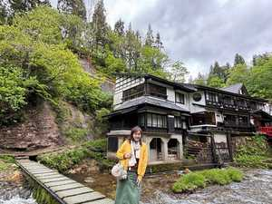
3/20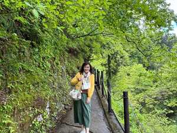
4/20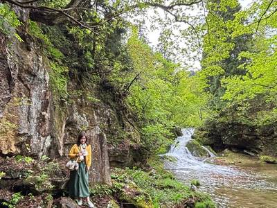
5/20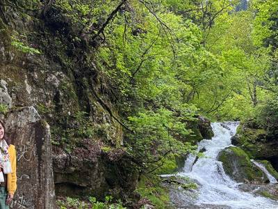
6/20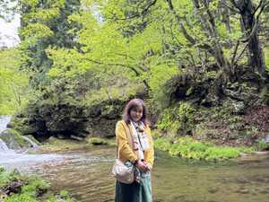
7/20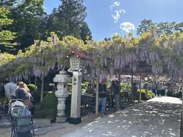
8/20
9/20
10/20
11/20
12/20
13/20
14/20
15/20
16/20
17/20
18/20
19/20
20/20
仙台市區自由晚餐
仙台市內自行品嚐東北美食
晚餐自理，可前往仙台市區品嚐知名的牛舌料理（牛タン）、毛豆泥（ずんだ）甜點，或仙台各式海鮮料理，東北美食等您探索！
1/5
2/5
3/5
4/5
5/5
3
第三天
2026年5月10日（日）
陸奧杜之湖畔 · 藏王天空步道 · 御釜 · 鳴子娃娃
🌅 早餐：飯店內用 | ☀️ 中餐：日式風味餐 | 🌙 晚餐：飯店豪華自助餐
🏨 裏磐梯レイクリゾート
🏨 裏磐梯レイクリゾート
📍 第3天移動路線
飯店早餐 — ドーミーイン
仙台シーサイド 豐盛早餐
最後一早在ドーミーイン仙台用餐，備足精神，今天是行程最豐富的一天！
1/5
2/5
3/5
4/5
5/5
陸奧杜之湖畔公園
東北唯一國營公園 — 10萬株鬱金香盛開
陸奧杜之湖畔公園（みちのく杜の湖畔公園）是東北唯一的國營公園，以藏王山脈為背景，廣闊的園區分南區（海濱花壇）、北區（農耕體驗）、里山區。
🌷 5月正值10萬株鬱金香盛開時節，各色鬱金香花海在藍天白雲下鮮豔奪目，色彩繽紛壯觀，令人驚嘆！
🌷 5月正值10萬株鬱金香盛開時節，各色鬱金香花海在藍天白雲下鮮豔奪目，色彩繽紛壯觀，令人驚嘆！
1/17
2/17
3/17
4/17
5/17
6/17
7/17
8/17
9/17
10/17
11/17
12/17
13/17
14/17
15/17
16/17
17/17
藏王天空步道 — HIGHLINE
春季雪之迴廊，壯闊山岳景觀
從藏王ECHO LINE分岐，長約2.5km的山岳觀光有料道路（4月下旬～11月初旬開通）。
🌨️ 春天雪之迴廊：道路兩側高達數公尺的積雪牆，如走在巨大白色峽谷中；
🌿 夏天滿山新綠；🍁 秋天鮮明紅葉 — 四季景觀絕美！
🌨️ 春天雪之迴廊：道路兩側高達數公尺的積雪牆，如走在巨大白色峽谷中；
🌿 夏天滿山新綠；🍁 秋天鮮明紅葉 — 四季景觀絕美！
1/7
2/7
3/7
4/7
5/7
6/7
7/7
藏王御釜 · 鳥居展望台
魔女之瞳 — 海拔1,670公尺的神秘火口湖
藏王御釜（お釜）海拔1,670公尺，由刈田岳、熊野岳、五色岳三山環抱的火口湖。湖水含有強酸性成分，依陽光折射呈現翠綠、寶藍等夢幻色調，被稱為「魔女之瞳」。
📏 湖周長約1公里，最深27.6公尺。
🌈 陳綺貞「殘缺的彩虹」MV即在此地取景！
📏 湖周長約1公里，最深27.6公尺。
🌈 陳綺貞「殘缺的彩虹」MV即在此地取景！
1/7
2/7
3/7
4/7
5/7
6/7
7/7
日式風味中餐
品嚐東北特色料理
享用精緻日式風味午餐，補充體力繼續下午的精彩行程。
1/5
2/5
3/5
4/5
5/5
鳴子娃娃 DIY 彩繪體驗
東北傳統工藝 — 小芥子木偶
鳴子木偶（鳴子こけし）是東北地區獨特的傳統工藝品，木偶的脖子可以轉動並發出「啾啾」的清脆聲響，因此得名「鳴子」。
🎨 親手彩繪屬於自己的小芥子木偶，將旅行記憶帶回家。每一隻都是獨一無二的紀念品！
🎨 親手彩繪屬於自己的小芥子木偶，將旅行記憶帶回家。每一隻都是獨一無二的紀念品！
1/8
2/8
3/8
4/8
5/8
6/8
7/8
8/8
車上風景 — 前往裏磐梯
從宮城移動至福島縣裏磐梯地區
搭乘遊覽車從宮城縣移動至福島縣裏磐梯地區，沿途欣賞東北初夏的山野景色，約2小時車程。窗外連綿的山脈與盆地相互交替，是寧靜的移動時光。
裏磐梯レイクリゾート — 豪華自助晚餐
TEL: 0241-37-1111 ｜ 五星級溫泉飯店
裏磐梯レイクリゾート是位於五色沼旁的高級溫泉度假飯店，依傍磐梯山與高原湖泊，景色極為優美。
🍽️ 今晚的豪華自助晚餐匯集了多種日式、西式料理，現場烹調，種類豐富。
♨️ 飯店設有天然溫泉大浴場，泡完溫泉神清氣爽，最適合消除旅途疲勞！
🍽️ 今晚的豪華自助晚餐匯集了多種日式、西式料理，現場烹調，種類豐富。
♨️ 飯店設有天然溫泉大浴場，泡完溫泉神清氣爽，最適合消除旅途疲勞！
1/7
2/7
3/7
4/7
5/7
6/7
7/7
飯店溫泉 — 裏磐梯の湯
享受東北純正溫泉，洗去旅途疲勞
入住裏磐梯レイクリゾート最大亮點之一就是溫泉大浴場。在雲霧繚繞的東北高原上泡湯，望著夜空，是旅途中難忘的放鬆時刻。
1/3
2/3
3/3
4
第四天
2026年5月11日（一）
塔崖 · 大內宿 · 會津鐵道 · 豬苗代湖
🌅 早餐：飯店內用 | ☀️ 中餐：會津郷土料理 | 🌙 晚餐：飯店豪華自助餐
🏨 裏磐梯レイクリゾート（連住）
🏨 裏磐梯レイクリゾート（連住）
📍 第4天移動路線
裏磐梯の早晨
飯店早餐與晨間風光
裏磐梯高原的清晨空氣清新沁涼，飯店窗外可遠眺磐梯山與高原湖泊的晨霧景色。享用飯店豐盛早餐，準備出發！
1/3
2/3
3/3
塔崖（塔のへつり）
2800萬年自然鬼斧神工的奇岩秘境
塔のへつり（塔崖）是距今約2800萬年前由沉積岩形成的奇特地形，經過漫長的天然風化與河川侵蝕，形成一座座如塔般聳立的懸崖峭壁，被日本列為國家天然紀念物。
🌉 走在吊橋上可從側面欣賞塔崖凹凸的輪廓線條；走入斷崖內部可近距離觀察岩石的紋理，近看遠看各有不同風情。
🌿「へつり」在會津方言中是「危險的斷崖絕壁」之意。
🌉 走在吊橋上可從側面欣賞塔崖凹凸的輪廓線條；走入斷崖內部可近距離觀察岩石的紋理，近看遠看各有不同風情。
🌿「へつり」在會津方言中是「危險的斷崖絕壁」之意。
1/20
2/20
3/20
4/20
5/20
6/20
7/20
8/20
9/20
10/20
11/20
12/20
13/20
14/20
15/20
16/20
17/20
18/20
19/20
20/20
大內宿 — 日本三大合掌村
江戶時代宿場町，茅葺屋頂完整保存
大內宿是連接會津若松市與日光今市的重要江戶時代宿場町，街道兩旁茅葺屋頂民家至今保存完整，是日本少見的古街道景觀。
🏛️ 1981年被日本選定為國家重要傳統建造物群保存地區，茅葺技術更被列入無形文化遺產。
🧅 大內宿名物「蔥蕎麥麵（ねぎそば）」：用一根完整大蔥代替筷子吃蕎麥麵，是當地獨特的飲食文化！
🏛️ 1981年被日本選定為國家重要傳統建造物群保存地區，茅葺技術更被列入無形文化遺產。
🧅 大內宿名物「蔥蕎麥麵（ねぎそば）」：用一根完整大蔥代替筷子吃蕎麥麵，是當地獨特的飲食文化！
1/20
2/20
3/20
4/20
5/20
6/20
7/20
8/20
9/20
10/20
11/20
12/20
13/20
14/20
15/20
16/20
17/20
18/20
19/20
20/20
會津郷土料理中餐
品嚐福島會津地區傳統風味
享用會津郷土料理，包括會津名產「棒鱈（棒だら）」、「こづゆ」（貝柱湯）等地方傳統料理，體驗會津武士之鄉的飲食文化。
1/3
2/3
3/3
會津鐵道 乘車體驗
日本人氣鐵道，沿途山林溪谷美景
會津鐵道是日本人氣鐵道線之一，沿線蜿蜒穿越自然山林與溪谷，景色優美。搭乘列車悠哉漫遊，時間彷彿靜止，讓心靈完全放鬆。
🌿 沿途可欣賞會津盆地的山林美景，春季嫩葉初綠，充滿生機。
🌿 沿途可欣賞會津盆地的山林美景，春季嫩葉初綠，充滿生機。
1/19
2/19
3/19
4/19
5/19
6/19
7/19
8/19
9/19
10/19
11/19
12/19
13/19
14/19
15/19
16/19
17/19
18/19
19/19
豬苗代湖 — 天鏡湖
日本第四大湖，清澈如鏡映出磐梯山
豬苗代湖面積103平方公里，是日本第四大湖，位於磐梯朝日國立公園內。湖水透明度在全日本數一數二，清澈見底，因能映照出磐梯山的雄偉山姿，又稱「天鏡湖」。
🦢 冬季有成群西伯利亞天鵝與野鴨在岸邊過冬；5月則可遙望磐梯山披著殘雪的春日英姿。
🦢 冬季有成群西伯利亞天鵝與野鴨在岸邊過冬；5月則可遙望磐梯山披著殘雪的春日英姿。
1/5
2/5
3/5
4/5
5/5
裏磐梯レイクリゾート — 第二晚豪華自助餐
飯店晚餐與溫泉，享受最後一晚高原假期
第二晚在裏磐梯レイクリゾート繼續享受豪華自助晚餐，現場烹飪的和食、洋食，讓旅途最後一晚留下美味記憶。
♨️ 再次享受飯店溫泉，在星空下泡湯，告別這段東北美好旅途。
♨️ 再次享受飯店溫泉，在星空下泡湯，告別這段東北美好旅途。
1/10
2/10
3/10
4/10
5/10
6/10
7/10
8/10
9/10
10/10